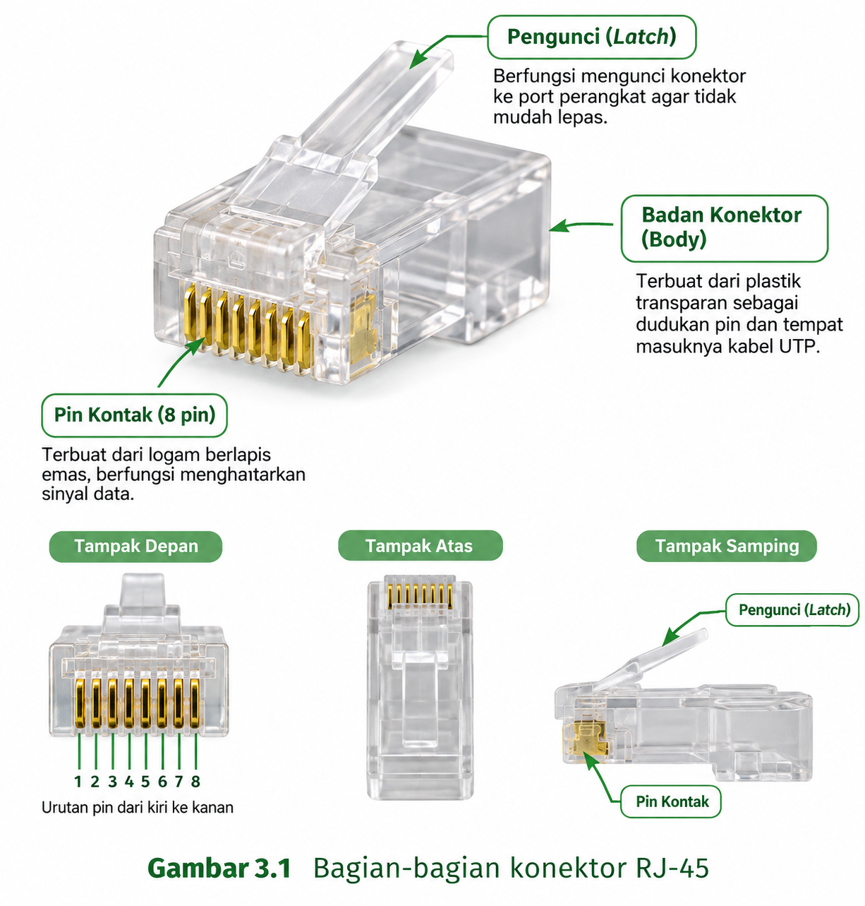
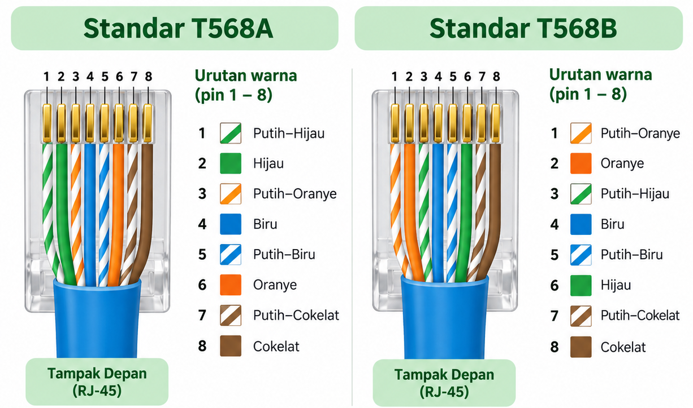

Tujuan Pembelajaran Bab Ini
- Peserta didik mampu menjelaskan pengertian, fungsi, dan bagian-bagian konektor RJ-45.
- Peserta didik mampu menjelaskan standar susunan warna T568A dan T568B.
3.1 Mengapa Kabel UTP Membutuhkan Konektor?
Kabel UTP yang telah kalian pelajari pada Bab 2 pada dasarnya hanyalah delapan kawat tembaga kecil yang dibungkus jacket. Kawat-kawat ini tidak dapat langsung dicolokkan ke port jaringan pada perangkat seperti switch, hub, router, atau komputer, karena bentuknya yang kecil dan rapuh, serta tidak memiliki bentuk yang sesuai dengan lubang port tersebut.
Untuk itulah diperlukan sebuah konektor, yaitu komponen kecil yang dipasang pada ujung kabel UTP agar dapat dicolokkan dengan aman dan stabil ke port perangkat jaringan. Konektor yang digunakan untuk kabel UTP disebut RJ-45.
3.2 Pengertian RJ-45
RJ-45 adalah singkatan dari Registered Jack 45, yaitu jenis konektor standar yang digunakan untuk menghubungkan kabel UTP ke port jaringan berjenis Ethernet. Bentuknya berupa kotak kecil transparan yang di bagian dalamnya terdapat delapan pin logam kecil yang sejajar.
Istilah "Registered Jack" sendiri berasal dari sistem penomoran standar konektor telekomunikasi yang telah didaftarkan (registered) untuk penggunaan tertentu. Angka 45 menunjukkan nomor pendaftaran standar tersebut. Meskipun terdengar rumit, yang perlu kalian ingat adalah: RJ-45 selalu digunakan berpasangan dengan kabel UTP untuk jaringan Ethernet, dan bentuknya sedikit lebih besar dibandingkan konektor telepon rumah (RJ-11) yang mungkin pernah kalian lihat.
3.3 Bagian-Bagian Konektor RJ-45

a. Rumah Konektor (Housing)
Bagian luar konektor yang berbentuk kotak transparan, biasanya terbuat dari plastik keras. Bagian ini melindungi seluruh komponen di dalamnya dan memungkinkan kita melihat susunan kawat di dalamnya karena sifatnya yang tembus pandang.
b. Delapan Pin Kontak
Delapan pin logam kecil berwarna keemasan yang tersusun sejajar di bagian atas konektor. Pin-pin inilah yang akan menembus lapisan pelindung setiap kawat kabel UTP saat konektor dipasang menggunakan tang crimping, sehingga terjadi kontak listrik antara pin dan kawat tembaga di dalamnya.
c. Lubang Masuk Kabel
Bagian belakang konektor yang berbentuk lubang, tempat kedelapan kawat kabel UTP yang telah disusun rapi dimasukkan sebelum konektor dipres menggunakan tang crimping.
d. Pengunci (Locking Clip)
Bagian kecil yang menonjol di sisi bawah konektor. Pengunci inilah yang akan mengunci konektor ke dalam port perangkat jaringan agar tidak mudah tercabut, sekaligus menjadi bagian yang ditekan ketika kita ingin melepas kabel dari port tersebut.
3.4 Delapan Warna Kawat pada Kabel UTP
Sebelum mempelajari standar susunan warna, penting untuk memastikan kalian benar-benar hafal kedelapan warna kawat yang terdapat di dalam kabel UTP. Kedelapan warna ini terbagi menjadi empat pasang, dan setiap pasang terdiri dari satu kawat bergaris putih dan satu kawat berwarna solid.
| Pasangan | Kawat Bergaris Putih | Kawat Warna Solid |
|---|---|---|
| Pasangan 1 | Putih-Oranye | Oranye |
| Pasangan 2 | Putih-Hijau | Hijau |
| Pasangan 3 | Putih-Biru | Biru |
| Pasangan 4 | Putih-Cokelat | Cokelat |
Perhatikan bahwa setiap pasang selalu terdiri dari warna solid dan versi "putih-"-nya. Cara ini memudahkan kita mengenali pasangan mana yang harus tetap dipilin bersama, karena kawat putih-oranye harus selalu berpasangan dengan kawat oranye, bukan tertukar dengan pasangan warna lain.
3.5 Standar Susunan Warna: T568A dan T568B
Agar seluruh teknisi jaringan di dunia menyusun warna kawat dengan cara yang sama dan konsisten, dibuatlah standar internasional untuk susunan warna kabel UTP pada konektor RJ-45. Terdapat dua standar yang umum digunakan, yaitu T568A dan T568B.

| Pin | T568A | T568B |
|---|---|---|
| 1 | Putih-Hijau | Putih-Oranye |
| 2 | Hijau | Oranye |
| 3 | Putih-Oranye | Putih-Hijau |
| 4 | Biru | Biru |
| 5 | Putih-Biru | Putih-Biru |
| 6 | Oranye | Hijau |
| 7 | Putih-Cokelat | Putih-Cokelat |
| 8 | Cokelat | Cokelat |
Perhatikan dengan saksama bahwa hanya pin 1, 2, 3, dan 6 yang berbeda antara T568A dan T568B (posisi pasangan hijau dan oranye saling bertukar), sedangkan pin 4, 5, 7, dan 8 tetap sama pada kedua standar. Inilah pola yang perlu kalian ingat agar tidak keliru ketika menyusun kabel.
Standar Mana yang Digunakan di Sekolah Kita?
Untuk praktik dasar pemasangan kabel straight-through di sekolah kita, standar yang digunakan pada kedua ujung kabel adalah T568B, karena inilah standar yang paling banyak digunakan di dunia kerja saat ini.
Standar T568A biasanya hanya digunakan pada salah satu ujung kabel crossover, sebagaimana telah kalian pelajari pada Bab 2.
Yang terpenting bukanlah menghafal standar mana yang 'lebih benar', melainkan konsistensi: kedua ujung kabel straight harus menggunakan standar yang sama persis.
3.6 Menghafal Urutan T568B dengan Mudah
Karena kabel straight dengan standar T568B adalah yang paling sering kalian gunakan, berikut adalah cara mudah untuk mengingat urutannya.
Jembatan Ingatan Urutan T568B
- Pin 1–2: sepasang ORANYE (putih-oranye, oranye).
- Pin 3: PUTIH-HIJAU (sendirian dulu, pasangannya menyusul di pin 6).
- Pin 4–5: sepasang BIRU (biru, putih-biru — urutannya terbalik dari pasangan lain).
- Pin 6: HIJAU (pasangan dari pin 3).
- Pin 7–8: sepasang COKELAT (putih-cokelat, cokelat).
Ingat kalimat bantu: 'Oranye-Oranye, Hijau-sendiri, Biru-Biru-terbalik, Hijau-menyusul, Cokelat-Cokelat'.
3.7 Kegiatan Peserta Didik — LKPD 3.1
Petunjuk LKPD 3.1
Bagian A: Gunakan kartu warna atau potongan kertas warna yang dibagikan guru. Susunlah kartu tersebut sesuai urutan T568B, lalu cocokkan dengan tabel pada bagian 3.5.
Bagian B: Gambarkan susunan warna T568B secara berurutan (pin 1 sampai 8) pada kotak berikut, lengkap dengan warnanya.
Bagian B — Tabel Susunan Warna T568B
| Pin | Warna Kawat | Kelompok Pasangan |
|---|---|---|
| 1 | ||
| 2 | ||
| 3 | ||
| 4 | ||
| 5 | ||
| 6 | ||
| 7 | ||
| 8 |
Gambarkan Susunan Warna Kabel T568B
Gambarkan urutan kawat dari pin 1 sampai pin 8 pada area berikut. Berikan warna sesuai standar T568B.
| Pin 1 | Pin 2 | Pin 3 | Pin 4 |
|---|---|---|---|
| Pin 5 | Pin 6 | Pin 7 | Pin 8 |
Rangkuman Bab 3
- RJ-45 (Registered Jack 45) adalah konektor standar yang menghubungkan kabel UTP ke port jaringan Ethernet.
- Bagian-bagian RJ-45: rumah konektor, delapan pin kontak, lubang masuk kabel, dan pengunci.
- Kabel UTP memiliki delapan warna kawat yang membentuk empat pasang: oranye, hijau, biru, dan cokelat, masing-masing dengan versi putihnya.
- Terdapat dua standar susunan warna: T568A dan T568B, yang berbeda hanya pada posisi pin 1, 2, 3, dan 6.
- T568B adalah standar yang paling umum digunakan untuk kabel straight-through di dunia kerja saat ini.
Latihan Soal Bab 3
1. Apa kepanjangan dari RJ-45 dan apa fungsinya?
2. Sebutkan empat bagian utama konektor RJ-45 beserta fungsinya!
3. Sebutkan delapan warna kawat pada kabel UTP, kelompokkan menjadi empat pasang!
4. Tuliskan urutan warna standar T568B dari pin 1 sampai pin 8!
5. Sebutkan pin mana saja yang berbeda antara T568A dan T568B!
6. Mengapa penting bagi seorang teknisi untuk mengikuti standar susunan warna yang baku, bukan menyusun warna sesuka hati asalkan tersambung?
Refleksi Pertemuan 3
Jawablah pertanyaan berikut dengan jujur sesuai dengan pemahaman kalian setelah mempelajari Bab 3.
- Apakah saya sudah hafal urutan T568B tanpa melihat catatan?
- Warna apa yang paling sering tertukar bagi saya?
- Bagian RJ-45 mana yang paling saya pahami fungsinya?